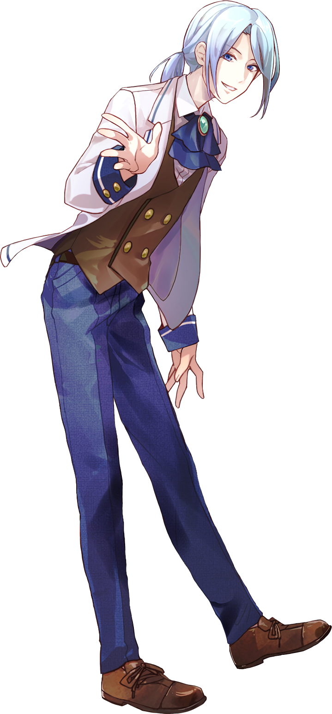
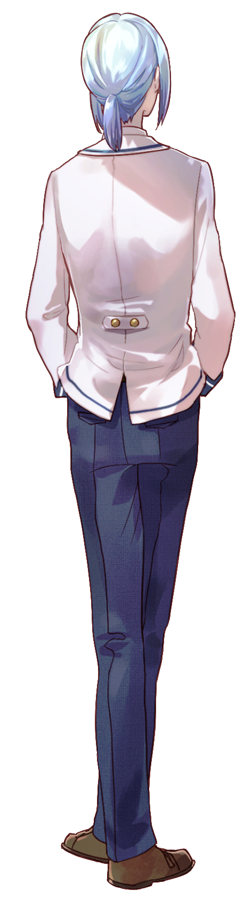

え ら と う ま
江良 冬真
TOUMA ERA
CV. ???
「──アンタは考えすぎなんだよ、
たまには肩の力抜いて……さ」
PROFILE
| 年齢 | 15歳 |
|---|---|
| 誕生日 | 12月4日 |
| 職業 | 高校1年生 |
| 身長 | 171cm |
| 出身 | 神奈川県横浜市 |
| 趣味・特技 | 天体観測・努力 |
| 家族構成 | 父・母・兄 |
| イメージカラー | 若竹色（わかたけいろ） |
めぐみ達の後輩の一年生で、俊彦の弟。
とても器用で、
どんなことでもすぐにこなしてしまう。
見た目とは正反対に活発な性格。
特定の部活には所属していないが、
放課後は毎日のように
どこかの部活へ顔を出しているため、
ひそかに
「兼部王」
と呼ばれている。
最近は旭の所属する囲碁将棋部へ
立ち寄ることが多く、
「打倒 篠原！」
と口では言っているものの、
旭のことは尊敬している。
────「篠原！ 今日も一局、勝負だっ！」
今日も懲りずに勝負を挑みに行く。
今日も懲りずに勝負を挑みに行く。